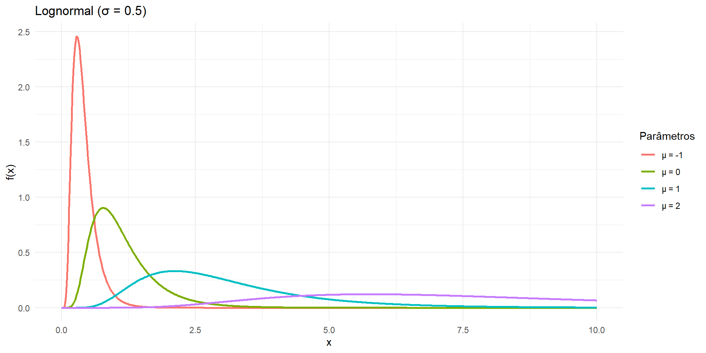
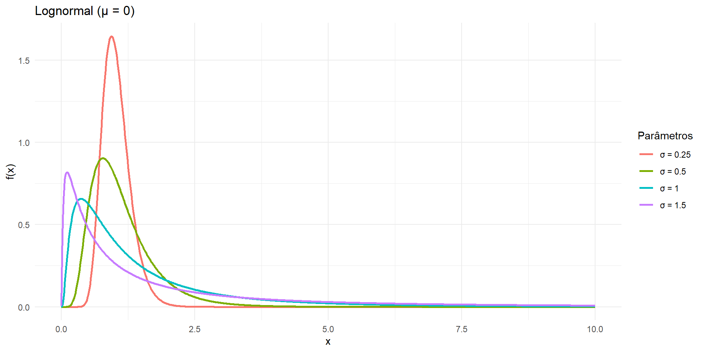
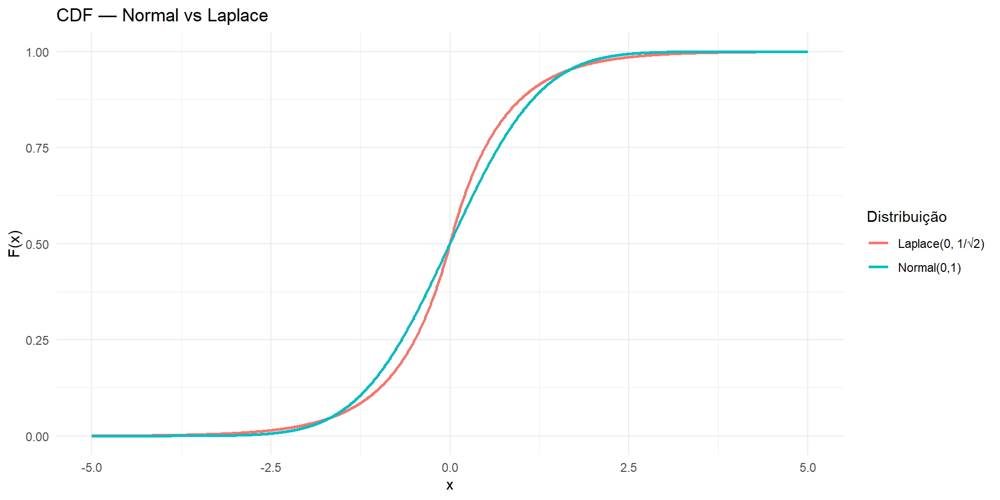
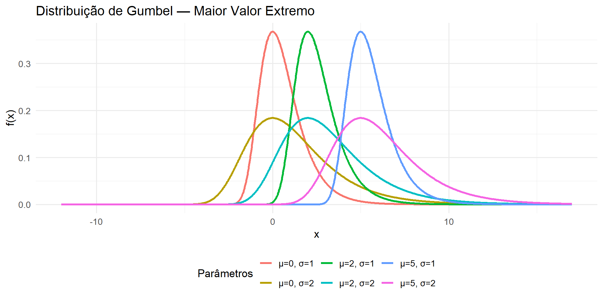

Outras Distribuições Contínuas
Função Gamma
A função Gamma é uma das funções especiais mais importantes em probabilidade e estatística. Ela aparece naturalmente em várias distribuições contínuas fundamentais:
- Distribuição Gamma
\[f(x |\alpha, \lambda) = \dfrac{\lambda e^{-\lambda x}(\lambda x)^{\alpha-1}}{\Gamma(\alpha)}\]
- Distribuição Qui-quadrado
\[f(x | n) = \frac{1}{2^{n/2} \Gamma(n/2)} x^{\frac{n}{2} -1} e^{- \frac{x}{2}}\]
Função Gamma
- Distribuição Beta
\[f(x |\alpha, \beta) = \frac{\Gamma(\alpha+\beta)}{\Gamma(\alpha)\Gamma(\beta)}x^{\alpha-1} (1-x)^{\beta-1} \]
- Distribuição t de Student
\[ f(x |\nu) = \frac{\Gamma [(\nu+1)/2]}{\Gamma (\nu/2)} \frac{1}{\sqrt{\nu\pi}} \left( 1 + \frac{x^2}{\nu} \right)^{-(\nu+1)/2} \]
Função Gamma
- Distribuição F de Snedecor
\[ f(x |\nu_1, \nu_2) = \frac{\Gamma [(\nu_1+\nu_2)/2] }{\Gamma \left( \frac{\nu_1}{2} \right) \Gamma \left( \frac{\nu_2}{2} \right) } \left( \frac{\nu_1}{\nu_2} \right)^{\nu_1/2} \frac{x^{(\nu_1-2)/2}}{[1+(\nu_1/\nu_2)x]^{(\nu_1+\nu_2)/2}} \]
Função Gamma
Definimos a função gamma como
\[\Gamma(\alpha) = \int_{0}^{\infty} e^{-y} \, y^{\alpha-1} \, dy, \,\,\,\,\,\,\,\ \alpha > 0\]
Vale destacar os seguintes resultados:
- \(\Gamma(\alpha) = (\alpha - 1)\Gamma(\alpha - 1)\);
- \(\Gamma(n) = (n-1)!\), \(n\) inteiro positivo;
- \(\Gamma(1/2) = \sqrt{(\pi)}\)
Função Gamma
Demonstração
- Resolvendo a integral por partes, fazendo \(u = y^{\alpha - 1}\) e \(dv = e^{-y} dy\), temos
\[ \begin{eqnarray} \Gamma(\alpha) &=& - e^{-y} y^{\alpha-1}\Big|_0^\infty + \int_0^\infty e^{-y} (\alpha - 1) y^{\alpha-2} \, dy \\ &=& (\alpha - 1)\int_0^\infty e^{-y} y^{\alpha-2} \, dy \\ &=& (\alpha - 1)\Gamma(\alpha - 1) \end{eqnarray} \]
Função Gamma
- Para valores inteiros positivos de \(\alpha\), por exemplo \(\alpha = n\), temos
\[ \begin{eqnarray} \Gamma(n) &=& (n-1)\Gamma(n-1) \\ &=& (n-1)(n-2)\Gamma(n-2) \\ &=& \cdots \\ &=& (n-1)(n-2)\cdots 3\cdot 2\cdot \Gamma(1) \end{eqnarray} \]
Como
\[ \begin{eqnarray} \Gamma(1) &=& \int_{0}^{\infty} e^{-y} \, y^{1-1} \, dy = \int_{0}^{\infty} e^{-y} dy = \lim_{t \to +\infty} \int_{0}^{t} e^{-t} dt = \lim_{t \to +\infty} (-e^{-t} + e^0) = 1 \end{eqnarray} \]
temos que \(\Gamma(n) = (n-1)!\).
Função Gamma
- Uma forma alternativa de definir a função gamma, às vezes útil, é dada por:
\[ \Gamma(\alpha) = 2\int_0^\infty e^{-y^2} y^{2\alpha-1} dy\] Temos que \(\Gamma(\alpha) = \int_{0}^{\infty} e^{-y} \, y^{\alpha-1} \, dy\). Fazendo \(y = u^2\), temos que \(dy = 2udu\). Assim,
\[ \begin{eqnarray} \Gamma(\alpha) &=& \int_{0}^{\infty} e^{-y} \, y^{\alpha-1} \, dy = \int_{0}^{\infty} e^{-u^2} \, u^{2\alpha-2} \, 2udu = 2\int_{0}^{\infty} e^{-u^2}u^{2\alpha-1}du \end{eqnarray} \]
Se provarmos que \(\left[ \Gamma\left( \frac{1}{2}\right) \right]^2 = \pi\), então segue que \(\Gamma\left( \frac{1}{2}\right) = \sqrt{\pi}\).
Função Gamma
Partindo de:
\[ \left[ \Gamma(\alpha) \right]^2 = 2\int_0^\infty x^{2\alpha-1}e^{-x^2} dx\quad 2\int_0^\infty y^{2\alpha-1}e^{-y^2} dy\]
o que resulta,
\[ \left[ \Gamma(\alpha) \right]^2 = 4\int_0^\infty\int_0^\infty x^{2\alpha-1} y^{2\alpha-1} e^{-(x^2+y^2)} dx dy\]
Função Gamma
Tomando \(\alpha = \dfrac{1}{2}\), temos \(2 \alpha - 1 = 0\) e assim,
\[ \begin{eqnarray} \displaystyle \left[ \Gamma \left({\frac {1}{2}}\right) \right]^2 = 4\int_0^\infty\int_0^\infty e^{-(x^2+y^2)} dx dy \end{eqnarray} \]
Para resolvermos esta integral dupla, podemos recorrer à técnica de coordenadas polares, na qual pontos \((x,y)\) são referenciados no sitema de coordenadas \((r,\theta)\), sendo não negativo e \(\theta\) variando de 0 a \(2\pi\).
Assim, tomamos \(x=r \cos\theta\) e \(y=r \text{ sen}\,\,\theta\), de forma que,
\[x^2+y^2 = r^2 \cos^2\theta +r^2 \text{ sen}^2\theta = r^2\]
Função Gamma
A unidade infinitesimal de área \(dx\text{ }dy\) corresponde à unidade infinitesimal de área \(r\text{ }dr\text{ }d\theta\) no sistema de coordenadas polares.
Além disso, integrar com tanto como variando de zero a infinito corresponde a integrar no primeiro quadrante, que, no sistema de coordenadas polares, consiste em integrar com \(\theta\) variando de 0 a \(\pi /2\) e variando de 0 a infinito.
Assim,
\[ \begin{eqnarray} \left[ \Gamma\left( \frac{1}{2}\right) \right]^2 &=& 4\int_0^{\pi/2}\int_0^\infty e^{-r^2} r\text{ } dr d\theta = 4\int_0^{\pi/2} d\theta \int_0^\infty e^{-r^2} r\text{ } dr = 4\int_0^{\pi/2} d\theta \left[ -\frac{e^{-r^2}}{2} \right]_0^\infty \\ &=& 4\int_0^{\pi/2} d\theta \left( \frac{1}{2} \right) = 2\int_0^{\pi/2}1\text{ } d\theta = 2 \left. \theta \right|_0^{\pi/2} = \pi \end{eqnarray} \]
Função Gamma

Distribuição Gamma
Dizemos que \(X\) segue uma distribuição Gamma com parâmetros \(\alpha > 0\) e \(\lambda > 0\) se sua função densidade é dada por
\[ f(x | \alpha, \lambda)= \begin{cases} \dfrac{\lambda e^{-\lambda x}(\lambda x)^{\alpha-1}}{\Gamma(\alpha)}, & x\ge0\\[6pt] 0, & x<0 \end{cases} \]
Notação: \(X \sim Gamma(\alpha, \lambda)\). Nessa parametrização:
\(\alpha\) = parâmetro de forma
\(\dfrac{1}{\lambda}\) = parâmetro de escala
Distribuição Gamma
Se \(X \sim Gamma(\alpha, \lambda)\), então
\[ \begin{eqnarray} E[X] &=& \frac{1}{\Gamma(\alpha)} \int_0^\infty x \lambda e^{-\lambda x} (\lambda x)^{\alpha-1}\,dx \\ &=& \frac{1}{\Gamma(\alpha)} \int_0^\infty e^{-\lambda x} (\lambda x)^{\alpha}\, dx \\ &=& \frac{1}{\lambda \Gamma(\alpha)} \int_0^\infty e^{-u} (u)^{\alpha}\, du \\ &=& \frac{\Gamma(\alpha+1)}{\lambda \,\Gamma(\alpha)} = \frac{\alpha \Gamma(\alpha)}{\lambda \,\Gamma(\alpha)} = \dfrac{\alpha}{\lambda} \end{eqnarray} \]
Distribuição Gamma
\[ \begin{eqnarray} E[X^2] &=& \frac{1}{\Gamma(\alpha)} \int_0^\infty x^2 \lambda e^{-\lambda x} (\lambda x)^{\alpha-1}\,dx = \frac{1}{\Gamma(\alpha)} \int_0^\infty x^2 \lambda e^{-\lambda x} \lambda^{\alpha -1} x^{\alpha-1}\, dx \\ &=& \frac{1}{\Gamma(\alpha)} \int_0^\infty e^{-\lambda x} \lambda^{\alpha}x^{\alpha+1}\, dx = \frac{\lambda^{\alpha}}{\Gamma(\alpha)} \int_0^\infty e^{-\lambda x} x^{\alpha+1}\, dx \\ &=& \frac{\lambda^{\alpha}}{\Gamma(\alpha)} \int_0^\infty e^{-u} \left(\dfrac{u}{\lambda}\right)^{\alpha+1}\,\left(\dfrac{1}{\lambda}\right) du = \frac{\lambda^{\alpha}}{\lambda^{\alpha +2}\Gamma(\alpha)} \int_0^\infty e^{-u} u^{\alpha+1}\, du \\ &=& \frac{\lambda^{\alpha}\Gamma(\alpha+2)}{\lambda^{\alpha +2} \,\Gamma(\alpha)} = \frac{(\alpha+1) \Gamma(\alpha+1)}{\lambda^2 \,\Gamma(\alpha)} = \frac{(\alpha+1)\alpha \Gamma(\alpha)}{\lambda^2 \,\Gamma(\alpha)} = \dfrac{\alpha (\alpha+1)}{\lambda^2} \end{eqnarray} \]
Distribuição Gamma
De forma que,
\[ \begin{eqnarray} Var(X) &=& E(X^2) - \left[E(X)\right]^2 \\ &=& \dfrac{\alpha (\alpha+1)}{\lambda^2} - \left[\dfrac{\alpha}{\lambda}\right]^2 \\ &=& \dfrac{\alpha^2 + \alpha}{\lambda^2} - \dfrac{\alpha^2}{\lambda^2} \\ &=& \dfrac{\alpha^2 + \alpha - \alpha^2}{\lambda^2} = \dfrac{\alpha}{\lambda^2} \end{eqnarray} \]
Distribuição Gamma
Logo, se \(X \sim Gamma(\alpha, \lambda)\), então
\[ f(x | \alpha, \lambda)= \begin{cases} \dfrac{\lambda e^{-\lambda x}(\lambda x)^{\alpha-1}}{\Gamma(\alpha)}, & x\ge0\\[6pt] 0, & x<0 \end{cases} \]
com
\[E(X) = \dfrac{\alpha}{\lambda} \,\,\,\,\,\,\,\,\,\,\,\, \text{ e } \,\,\,\,\,\,\,\,\,\,\,\,Var(X) = \dfrac{\alpha}{\lambda^2}\]
Distribuição Gamma
A Função de Distribuição Acumulada da distribuição gamma é intratável analiticamente.
\[ F(x\mid\alpha,\lambda) = \int_{0}^{x} \frac{\lambda e^{-\lambda u}(\lambda u)^{\alpha-1}}{\Gamma(\alpha)}\,du, \qquad x\ge 0. \]
Para \(\alpha\) inteiro positivo, a equação acima pode ser integrada por partes, resultando em
\[ F(x\mid\alpha,\lambda) = \begin{cases} 1 - \sum_{k=0}^{\alpha-1}\frac{\lambda^k}{k!} x^k e^{-\lambda x}, & x > 0\\[6pt] 0, & x \leq 0 \end{cases} \]
A expressão acima é a soma de termos da Poisson com média \(\lambda x\).
Distribução Gamma

Figure 1: Distribuição Gama — variação do shape (α) com λ fixo.
Distribução Gamma

Figure 2: Distribuição Gama — variação da taxa (λ) com α fixo.
Distribuição Gamma
A distribuição Gamma tem muitas aplicações reais, especialmente quando estudamos tempos até ocorrência de eventos.
- Tempo até falha / confiabilidade de sistemas: modelagem do tempo de vida de componentes mecânicos, eletrônicos, etc.
- Tempo até ocorrência de eventos em Poisson: Se eventos acontecem segundo um processo de Poisson com taxa \(\lambda\):
- o tempo até o primeiro evento é Exponencial (Gamma(1, \(\lambda\)))
- o tempo até o \(k\)-ésimo evento é Gamma(k,\(\lambda\))
- Modelagem de tempos de espera em filas: em teoria de filas (M/M/1, G/G/1 etc.), tempos de serviço ou tempos de atendimento podem ser modelados como Gamma.
Distribuição Gamma
- Priori conjugada em Bayesiana: é priori conjugada para o parâmetro de taxa de uma Exponencial ou Poisson. Então em inferência Bayesiana, a Gamma aparece o tempo todo como priori para \(\lambda\)
- Hidrologia / clima: modelagem de chuvas acumuladas (precipitação) ao longo de certo intervalo: o total acumulado de chuva frequentemente é bem modelado por Gamma.
- Biologia / Epidemiologia: tempo até infecção, tempo até recuperação, duração de hospitalização, tempos de permanência podem ser modelados por Gamma (ou Weibull, que é próxima).
- Análise de risco / Seguros: valores positivos e assimétricos (como sinistros) podem ser modelados com Gamma.
Distribuição Gamma
Exemplo 01: Suponha que o tempo gasto por um estagiário selecionado aleatoriamente para realizar uma tarefa em uma empresa tem uma distribuição gamma com média \(20\,\, \text{minutos}\) e variância de \(80\,\, \text{minutos}^2\)
- Quais são os parâmetros da distribuição gamma utilizada? R: \(\lambda = 0,25\) e \(\alpha = 5\)
- Qual é a probabilidade de um estagiário realizar a tarefa em no máximo 24 minutos? R: \(0,7149\)
- Qual é a probabilidade de um estagiário passar entre 20 e 40 minutos realizando a tarefa? R: \(0,5595\)
Distribuição Gamma
Exemplo 02: A duração do atendimento de cada cliente no caixa de um supermercado tem distribuição Gamma com parâmetro de forma \(\alpha = 12\) e parâmetro de taxa \(\lambda = 2\)
Qual a média e variância da duração dos atendimentos? R: \(E(x) = 6\) e \(Var(X) = 3\)
Qual a probabilidade de um atendimento durar menos de 5 minutos? R: \(0,3032\)
Distribuição Qui-Quadrado
Um caso particular da distribuição Gamma, quando tomamos \(\alpha = \dfrac{n}{2}\) e \(\lambda = \dfrac{1}{2}\), onde \(n\) é um inteiro positivo.
Assim, para \(\alpha = \dfrac{n}{2}\) e \(\lambda = \dfrac{1}{2}\),
\[ \begin{eqnarray} f(x) = \dfrac{\frac{1}{2} e^{-\frac{x}{2}}\left(\frac{x}{2}\right)^{\frac{n}{2}-1}}{\Gamma \left(\frac{n}{2}\right)} = \dfrac{\frac{e^{-\frac{x}{2}}}{2} \left(\frac{x ^{\frac{n}{2}-1}}{2^{\frac{n}{2}-1}}\right)}{\Gamma \left(\frac{n}{2}\right)} = \dfrac{\frac{e^{-\frac{x}{2}} x ^{\frac{n}{2}-1}}{2^{\frac{n}{2}}}}{\Gamma \left(\frac{n}{2}\right)} = \dfrac{1}{2^{\frac{n}{2}} \Gamma \left(\frac{n}{2}\right)} e^{-\frac{x}{2}} x ^{\frac{n}{2}-1} \end{eqnarray} \]
Distribuição Qui-Quadrado
Logo, se \(X \sim \chi^2_n\), então
\[ f(x | \alpha, \lambda)= \begin{cases} \dfrac{1}{2^{\frac{n}{2}} \Gamma \left(\frac{n}{2}\right)} e^{-\frac{x}{2}} x ^{\frac{n}{2}-1}, & x\ge0\\[6pt] 0, & x<0 \end{cases} \]
com
\[E(X) = n \,\,\,\,\,\,\,\,\,\,\,\, \text{ e } \,\,\,\,\,\,\,\,\,\,\,\,Var(X) = 2n\]
Distribuição Qui-Quadrado
A Função de Distribuição Acumulada da distribuição qui-quadrado é intratável analiticamente.
\[ F(x\mid n) = \int_{0}^{x} \dfrac{1}{2^{\frac{n}{2}} \Gamma \left(\frac{n}{2}\right)} e^{-\frac{x}{2}} x ^{\frac{n}{2}-1} \,dx, \qquad x\ge 0. \]
Para \(n\) inteiro positivo par, então existe forma como série finita:
\[ F(x\mid n) = 1 - e^{-x/2}\sum_{k=0}^{\frac{n}{2}-1}\frac{\left(\frac{x}{2}\right)^k}{k!} \]
ou seja, quando \(n\) é par, ela pode ser escrita como uma soma finita de termos tipo Poisson.
Distribuição Qui-Quadrado

Figure 3: Densidades qui-quadrado para vários graus de liberdade n.
Distribuição Qui-Quadrado
A distribuição qui-quadrado é central em inferência estatística porque ela surge naturalmente quando somamos quadrados de variáveis Normais padrão:
\[\chi^2_n = \displaystyle{\sum_{i=1}^n} Z_i^2, \,\,\,\,\, Z_i \sim N(0,1)\]
Logo, ela está por trás dos testes mais usados com dados categóricos, ANOVA, variâncias e na estruturação das distribuições t e F.
Distribuição Beta
Diz-se que uma variável aleatória tem distribução Beta, se sua função densidade é dada por
\[ f(x \mid a,b)= \begin{cases} \dfrac{1}{B(a,b)} x^{\,a-1} (1-x)^{\,b-1}, & 0<x<1\\[6pt] 0, & \text{caso contrário} \end{cases} \]
em que a função Beta é dada por
\[B(a,b)=\int_0^1 x^{\,a-1} (1-x)^{\,b-1}\,dx\]
Distribuição Beta
Além disso, a função Beta tem uma conexão muito importante com a função Gamma
\[B(a,b) = \dfrac{\Gamma(a) \Gamma(b)}{\Gamma(a+b)}\]
Distribuição Beta
Se \(X \sim Beta(a, b)\), então
\[ \begin{eqnarray} E[X] &=& \int_0^1 x \dfrac{1}{B(a,b)} x^{\,a-1} (1-x)^{\,b-1} &=& \dfrac{1}{B(a,b)} \int_0^1 x^a(1-x)^{b-1} = \dfrac{B(a+1,b)}{B(a,b)} \end{eqnarray} \]
Usando a relação \(B(a,b) = \dfrac{\Gamma(a) \Gamma(b)}{\Gamma(a+b)}\), temos
\[ \begin{eqnarray} \dfrac{B(a+1,b)}{B(a,b)} &=& \dfrac{\dfrac{\Gamma(a+1)\Gamma(b)}{\Gamma(a+b + 1)}}{\dfrac{\Gamma(a)\Gamma(b)}{\Gamma(a+b)}} = \dfrac{\Gamma(a+1)\Gamma(b)}{\Gamma(a+b + 1)} \times \dfrac{\Gamma(a+b)}{\Gamma(a)\Gamma(b)} = \dfrac{\Gamma(a+1)\Gamma(a+b)}{\Gamma(a+b + 1)\Gamma(a)}= \end{eqnarray} \]
Distribuição Beta
\(= \dfrac{a\Gamma(a)\Gamma(a+b)}{(a+b)\Gamma(a+b)\Gamma(a)} = \dfrac{a}{a+b}\)
\[ \begin{eqnarray} E[X^2] &=& \int_0^1 x^2 \dfrac{1}{B(a,b)} x^{\,a-1} (1-x)^{\,b-1} = \dfrac{1}{B(a,b)} \int_0^1 x^{a+1}(1-x)^{b-1} = \dfrac{B(a+2,b)}{B(a,b)} \\ &=& \dfrac{\dfrac{\Gamma(a+2)\Gamma(b)}{\Gamma(a+b + 2)}}{\dfrac{\Gamma(a)\Gamma(b)}{\Gamma(a+b)}} = \dfrac{\Gamma(a+2)\Gamma(b)\Gamma(a+b)}{\Gamma(a+b + 2)\Gamma(a)\Gamma(b)} = \dfrac{(a+1)\Gamma(a+1)\Gamma(a+b)}{(a+b+1)\Gamma(a+b + 1)\Gamma(a)} \\ &=& \dfrac{(a+1)a\Gamma(a)\Gamma(a+b)}{(a+b+1)(a+b)\Gamma(a+b)\Gamma(a)} = \dfrac{(a+1)a}{(a+b+1)(a+b)} \end{eqnarray} \]
Distribuição Beta
De forma que,
\[ \begin{eqnarray} Var(X) &=& E(X^2) - \left[E(X)\right]^2 \\ &=& \dfrac{(a+1)a}{(a+b+1)(a+b)}-\left[\dfrac{a}{a+b}\right]^2 = \dfrac{a^2 + a}{(a+b+1)(a+b)}-\dfrac{a^2}{(a+b)^2} \\ &=& \dfrac{(a^2 + a)(a+b) - a^2(a+b+1)}{(a+b+1)(a+b)^2} = \dfrac{a^3 + a^2b+a^2 +ab- a^3-a^2b-a^2}{(a+b+1)(a+b)^2} \\ &=& \dfrac{ab}{(a+b+1)(a+b)^2} \end{eqnarray} \]
Distribuição Beta
Logo, se \(X \sim Beta(a,b)\), então
\[ f(x \mid a,b)= \begin{cases} \dfrac{1}{B(a,b)} x^{\,a-1} (1-x)^{\,b-1}, & 0<x<1\\[6pt] 0, & \text{caso contrário} \end{cases} \]
com
\[E(X) = \dfrac{a}{a+b} \,\,\,\,\,\,\,\,\,\,\,\, \text{ e } \,\,\,\,\,\,\,\,\,\,\,\,Var(X) = \dfrac{ab}{(a+b+1)(a+b)^2}\]
Distribuição Beta
A Função de Distribuição Acumulada da distribuição Beta é intratável analiticamente.
\[ F(x| a,b)=\dfrac{1}{B(a,b)}\int_0^x t^{a-1}(1-t)^{b-1}dt. \qquad 0< x < 1. \]
Distribuição Beta

Figure 4: Distribuição Beta — variação de a (shape1) com b fixo.
Distribuição Beta

Figure 5: Distribuição Beta — variação de b (shape2) com a fixo.
Distribuição Beta

Figure 6: Distribuição Beta — simetria quando α = β.
Distribuição Beta
A distribuição Beta é usada para modelar proporções (variáveis contínuas entre 0 e 1). É uma das distribuições mais importantes em estatística aplicada.
- Modelagem de proporções: proporção de sucesso, taxa de clique (CTR) em marketing digital, fração de tempo ativo de um equipamento, percentual de umidade, pureza, concentração, etc.
- Inferência Bayesiana: é a prior conjugada da Bernoulli e da Binomial → se o parâmetro de interesse é uma probabilidade \(p\), a priori Beta é natural.
- Modelo para incerteza em probabilidades: incerteza sobre \(p\) em “probabilidade de sucesso” antes de observar dados, nossa crença sobre \(p\) é Beta
Distribuição Beta
Exemplo 03: A porcentagem de impurezas por lote, em determinado produto químico, é uma variável aleatória com distribuição Beta com parâmetros \(a = 3\) e \(b = 2\). Um lote com mais de \(40\%\) de impurezas não pode ser vendido.
- Qual é a probabilidade de que um lote, selecionado ao acaso, não possa ser vendido por causa do excesso de impurezas? R: \(0,8208\)
- Quantos lotes, em média, são selecionados, ao acaso, até que se encontre um que não pode ser vendido por causa do excesso de impurezas? R: \(1,2183\)
- Qual é a porcentagem média de impurezas nos lotes desse produto químico? R: \(0,60\)
Distribuição Beta
Exemplo 04: O teor de gordura no leite de um rebanho bovino é uma variável com distribuição Beta com parâmetros \(a = 2\) e \(b = 5\).
- Qual o teor médio de gordura no leite? R: \(0,2857\)
- Qual o percentual de amostras que terá teor de gordura menor que \(10\%\)? R: \(0,1143\)
Distribuição Weibull
Uma variável aleatória tem distribuição de Weibull com parâmetros \(\beta > 0\) e \(\alpha > 0\) se sua função densidade para \(x \geq 0\) é dada por
\[ f(x|\alpha, \beta) = \begin{cases} \dfrac{\beta}{\alpha} \left(\dfrac{x}{\alpha}\right)^{\beta - 1} \exp\!\left[-\left(\dfrac{x}{\alpha}\right)^{\beta}\right], & x\geq0\\[10pt] 0, & x<0 \end{cases} \]
Nesta parametrização,
- \(\beta\) - parâmetro de forma
- \(\alpha\) - parâmetro de escala
Distribuição Weibull
Se \(X \sim Weibull(\alpha, \beta)\), então
\[ \begin{eqnarray} E[X] &=& \int_0^\infty x \dfrac{\beta}{\alpha} \left(\dfrac{x}{\alpha}\right)^{\beta - 1} \exp\!\left[-\left(\dfrac{x}{\alpha}\right)^{\beta}\right]dx = \int_0^\infty \alpha u \dfrac{\beta}{\alpha} \left(\dfrac{\alpha u}{\alpha}\right)^{\beta - 1} \exp\!\left[-\left(\dfrac{\alpha u}{\alpha}\right)^{\beta}\right] \alpha \,\,\,du \\&=& \int_0^\infty u \,\,\beta \,\, u^{\beta - 1} \exp\!\left[-u^{\beta}\right] \alpha \,\,\,du = \int_0^\infty \beta \,\, u^{\beta } \exp\!\left[-u^{\beta}\right] \alpha \,\,\,du \\ &=& \int_0^\infty \beta \,\, v \exp\!\left[-v\right] \alpha \,\,\,\dfrac{1}{\beta} v^{\frac{1}{\beta}-1} dv = \alpha \int_0^\infty \exp\!\left[-v\right] v^{\frac{1}{\beta}} \,\, dv = \alpha \Gamma\left( \dfrac{1}{\beta} + 1\right) \end{eqnarray} \]
Distribuição Weibull
\[ \small \begin{eqnarray} E[X^2] &=& \int_0^\infty x^2 \dfrac{\beta}{\alpha} \left(\dfrac{x}{\alpha}\right)^{\beta - 1} \exp\!\left[-\left(\dfrac{x}{\alpha}\right)^{\beta}\right]dx = \int_0^\infty (\alpha u)^2 \dfrac{\beta}{\alpha} \left(\dfrac{\alpha u}{\alpha}\right)^{\beta - 1} \exp\!\left[-\left(\dfrac{\alpha u}{\alpha}\right)^{\beta}\right] \alpha \,\,\,du \\&=& \int_0^\infty \alpha^2u^2 \,\,\dfrac{\beta}{\alpha} \,\, u^{\beta - 1} \exp\!\left[-u^{\beta}\right] \alpha \,\,\,du = \int_0^\infty \alpha^2 \,\,\beta \,\, u^{\beta +1} \exp\!\left[-u^{\beta}\right]\,\,\,du \\ &=& \int_0^\infty \alpha^2 \,\,\beta \,\, u^{\beta} \,\, u \,\, \exp\!\left[-u^{\beta}\right]\,\,\,du = \int_0^\infty \alpha^2 \beta \,\, v \,\, v^{\frac{1}{\beta}}\exp\!\left[-v\right] \,\,\dfrac{1}{\beta} v^{\frac{1}{\beta}-1} dv \\ &=& \alpha^2 \int_0^\infty v^{\frac{1}{\beta} + 1} \exp\!\left[-v\right] v^{\frac{1}{\beta}-1} \,\, dv = \alpha^2 \int_0^\infty v^{\frac{2}{\beta}} \exp\!\left[-v\right] \,\, dv = \alpha^2 \Gamma\left( \dfrac{2}{\beta} + 1\right) \end{eqnarray} \]
Distribuição Weibull
De forma que,
\[ \begin{eqnarray} Var(X) &=& E(X^2) - \left[E(X)\right]^2 \\ &=& \alpha^2 \Gamma\left( \dfrac{2}{\beta} + 1\right)-\left[\alpha \Gamma\left( \dfrac{1}{\beta} + 1\right)\right]^2 = \alpha^2 \Gamma\left( \dfrac{2}{\beta} + 1\right)- \alpha^2\left[ \Gamma\left( \dfrac{1}{\beta} + 1\right)\right]^2\\ &=& \alpha^2\left\{\Gamma\left( \dfrac{2}{\beta} + 1\right) - \left[\Gamma\left( \dfrac{1}{\beta} + 1\right)\right]^2\right\} \end{eqnarray} \]
Distribuição Weibull
Se \(X \sim Weibull(\alpha, \beta)\), então
\[ f(x|\alpha, \beta) = \begin{cases} \dfrac{\beta}{\alpha} \left(\dfrac{x}{\alpha}\right)^{\beta - 1} \exp\!\left[-\left(\dfrac{x}{\alpha}\right)^{\beta}\right], & x\geq0\\[10pt] 0, & x<0 \end{cases} \]
com
\[E(X) = \alpha \Gamma\left( \dfrac{1}{\beta} + 1\right) \,\,\,\,\,\,\,\,\,\,\,\, \text{ e } \,\,\,\,\,\,\,\,\,\,\,\,Var(X) = \alpha^2\left\{\Gamma\left( \dfrac{2}{\beta} + 1\right) - \left[\Gamma\left( \dfrac{1}{\beta} + 1\right)\right]^2\right\}\]
Distribuição Weibull
Observação: Se \(X \sim Weibull(\alpha, 1)\), ou seja, fazendo \(\beta = 1\), temos
\[f(x) = \dfrac{1}{\alpha} \left(\dfrac{x}{\alpha}\right)^{1 - 1} \exp\!\left[-\left(\dfrac{x}{\alpha}\right)^{1}\right] = \dfrac{1}{\alpha} \exp\!\left(-\dfrac{x}{\alpha}\right), \,\,\,\,\,\, x\geq 0\]
Fazendo \(\lambda = \dfrac{1}{\lambda}\), temos \(f(x) = \lambda e^{-\lambda x}\). Logo \(X \sim Exp(\lambda)\).
Distribuição Weibull
Uma das vantagens da distribuição Weibull é a possibilidade de encontrar a sua função de distribuição parametrizada por \(\alpha\) e \(\beta\). Dessa forma fica fácil fazer cálculos de probabilidades.
Por definição, \(F(x) = P(X ≤ x)\). Para \(x \leq 0\) claramente \(F(x) = 0\). Para \(x > 0\), temos:
\[F(x) = \int_0^x \dfrac{\beta}{\alpha}\left(\dfrac{t}{\alpha}\right)^{\beta - 1} \exp\!\left[-\left(\dfrac{t}{\alpha}\right)^{\beta}\right] \,\,dt\]
Mudança de variável: \(u=\left(\frac{t}{\alpha}\right)^{\beta} \;\;\Rightarrow\;\; du=\frac{\beta}{\alpha}\left(\frac{t}{\alpha}\right)^{\beta-1}dt.\) Quando \(t=0\), \(u=0\); quando \(t=x\), \(u=(x/\alpha)^{\beta}\).
Distribuição Weibull
Logo,
\[ F(x)=\int_{0}^{(x/\alpha)^{\beta}} e^{-u}\,du = \Big[-e^{-u}\Big]_{0}^{(x/\alpha)^{\beta}} = 1-\exp\!\left[-\left(\frac{x}{\alpha}\right)^{\beta}\right] \]
Portanto,
\[ F(x|\alpha, \beta)= \begin{cases} 1-\exp\!\left[-\left(\dfrac{x}{\alpha}\right)^{\beta}\right], & x> 0,\\[8pt] 0, & x\le0. \end{cases} \]
Distribuição Weibull

Figure 7: Distribuição Weibull — variação de β (forma) com α fixo.
Distribuição Weibull

Figure 8: Distribuição Weibull — variação de α (escala) com β fixo.
Distribuição Weibull
A Weibull é uma das distribuições mais usadas em engenharia para modelar tempo até falha/tempo de vida. Ela é extremamente flexível porque o parâmetro de forma \(\beta\) permite que o risco aumente, diminua ou seja constante ao longo do tempo.
- Engenharia de Confiabilidade:
- vida útil de componentes mecânicos e eletrônicos]
- fadiga de materiais
- tempo até quebra de peças, motores, rolamentos, cabos, soldas
- Análise de Risco/Manutenção:
- planejamento de manutenção preventiva
- prever quando um equipamento deve ser substituído
Distribuição Weibull
- Análise de sobrevivência/biomedicina:
- tempo até ocorrência de um evento (recorrência de doença, óbito, falha de tratamento)
- alternativa mais flexível que exponencial
- Meteorologia e Clima:
- distribuição de vento (velocidade do vento normalmente é modelada por Weibull)
- Pesquisa operacional:
- tempo até falha em sistemas complexos
- modelagem em teoria de filas com tempos de serviço não-exponenciais
Distribuição Weibull
Exemplo 05: Uma empresa realiza treinamentos periódicos com seus funcionários. Em cada grupo de treinamento é passado uma tarefa desafio individual e os funcionários do grupo podem fazê-la durante o tempo que precisarem. O tempo que dura a tarefa desafio, em horas, pode ser considerada uma variável aleatória de Weibull com \(\alpha = 2\) e \(\beta = 0,4\).
- Em média, quanto tempo dura a tarefa desafio em um treinamento? R: \(6,6467\) \((\approx 6h38min)\)
- Qual a probabilidade da tarefa desafio durar menos de 8 horas? R: \(0,8247\)
- A tarefa desafio já está sendo realizada há 2 horas. Qual a probabilidade dela acabar nas próximas 2 horas? R: \(0,2735\)
- Qual o menor tempo \(t\), em horas, para o qual podemos dizer que \(95\%\) das tarefas desafio duram menos que \(t\)? R: \(31,06615\) \((\approx 31h04min)\)
Distribuição Weibull
Exemplo 06: Uma loja quer saber quanto tempo suas lâmpadas LED duram, para decidir garantia. Ela testa várias lâmpadas funcionando 24 horas por dia e anota o tempo até queimarem. Os dados mostram que quanto mais antiga a lâmpada, mais chance ela tem de queimar a qualquer momento, ou seja, os dados seguem uma distribuição de Weibull com parâmetros \(\alpha = 200\) e \(\beta = 1,4\).
- Qual a probabilidade de uma lâmpada queimar antes de 150 dias? R: \(0,4875\)
- Qual a probabilidade de uma lâmpada queimar entre 100 e 250 dias? R: \(0,4296\)
Distribuição Log-Normal
Uma variável \(X\) tem distribuição Log-Normal quando
\[\ln(X) \sim N(\mu, \sigma^2)\]
Assim, \(X \sim Log-Normal(\mu, \sigma^2)\) se sua função densidade é dada por
\[ f(x|\mu, \sigma) = \begin{cases} \dfrac{1}{x\, \sigma\, \sqrt{2\pi}} \,\exp\!\left[-\dfrac{1}{2}\left(\dfrac{\ln x - \mu}{\sigma}\right)^2\right], & x>0\\[10pt] 0, & x\leq 0 \end{cases} \]
Distribuição Log-Normal
\[ \begin{eqnarray} E(X) &=& \int_{-\infty}^{\infty} x \,\dfrac{1}{x\, \sigma\, \sqrt{2\pi}} \,\exp\!\left[-\dfrac{1}{2}\left(\dfrac{\ln x - \mu}{\sigma}\right)^2\right]\,dx \\&=& \int_{0}^{\infty} \,\dfrac{1}{\sigma \,\sqrt{2\pi}}\exp\!\left[-\dfrac{1}{2}\left(\dfrac{\ln x - \mu}{\sigma}\right)^2\right]\,dx \end{eqnarray} \] Mudança de variável: \(z = \ln(x) \Rightarrow x = e^z, dx = e^z \, dz\). Quando \(x \in (0, \infty) \Rightarrow z \in (-\infty,\infty)\)
\[ \begin{eqnarray} &=& \int_{-\infty}^{\infty} \dfrac{1}{\sigma\, \sqrt{2\pi}} \,\exp\!\left[-\dfrac{1}{2}\left(\dfrac{z - \mu}{\sigma}\right)^2\right]\, e^z \,dz \\&=& \int_{-\infty}^{\infty} \,\dfrac{1}{\sigma \,\sqrt{2\pi}}\exp\!\left[-\dfrac{1}{2}\left(\dfrac{z - \mu}{\sigma}\right)^2 + z\right]\,dz \end{eqnarray} \]
Distribuição Log-Normal
Completando o quadrado do expoente:
\[ \begin{eqnarray} z-\dfrac{(z-\mu)^2}{2\sigma^2} &=& -\dfrac{1}{2\sigma^2}\Big[(z-\mu)^2-2\sigma^2 z\Big] = -\dfrac{1}{2\sigma^2}\Big[z^2-2(\mu+\sigma^2)z+\mu^2\Big] \\ &=& -\dfrac{1}{2\sigma^2}\big[\big(z-(\mu+\sigma^2)\big)^2 - (\mu+\sigma^2)^2+\mu^2\big] \\ &=& -\dfrac{\big(z-(\mu+\sigma^2)\big)^2}{2\sigma^2} +\dfrac{(\mu+\sigma^2)^2-\mu^2}{2\sigma^2} \\ &=& -\dfrac{\big(z-(\mu+\sigma^2)\big)^2}{2\sigma^2} +\mu+\dfrac{\sigma^2}{2} \end{eqnarray} \]
Distribuição Log-Normal
Assim,
\[\small \begin{eqnarray} \int_{-\infty}^{\infty} \,\dfrac{1}{\sigma \,\sqrt{2\pi}}\exp\!\left[-\dfrac{1}{2}\left(\dfrac{z - \mu}{\sigma}\right)^2 + z\right]\,dz &=& \int_{-\infty}^{\infty} \,\dfrac{1}{\sigma \,\sqrt{2\pi}}\exp\!\left[-\dfrac{\big(z-(\mu+\sigma^2)\big)^2}{2\sigma^2} +\mu+\dfrac{\sigma^2}{2}\right]\,dz \\&=& e^{\mu+\dfrac{\sigma^2}{2}} \int_{-\infty}^{\infty} \dfrac{1}{\sigma \,\sqrt{2\pi}} \exp\!\left[-\frac{\big(z-(\mu+\sigma^2)\big)^2}{2\sigma^2}\right]\,dz \end{eqnarray} \]
A integral é 1 (é uma densidade Normal). Logo,
\[ \boxed{E(X)=\exp\!\left(\mu+\frac{\sigma^2}{2}\right)} \]
Distribuição Log-Normal
Da mesma forma,
\[ \begin{eqnarray} E(X^2) &=& \int_{-\infty}^{\infty} x^2 \,\dfrac{1}{x\, \sigma\, \sqrt{2\pi}} \,\exp\!\left[-\dfrac{1}{2}\left(\dfrac{\ln x - \mu}{\sigma}\right)^2\right]\,dx \\&=& \int_{0}^{\infty} \,\dfrac{x}{\sigma \,\sqrt{2\pi}}\exp\!\left[-\dfrac{1}{2}\left(\dfrac{\ln x - \mu}{\sigma}\right)^2\right]\,dx \end{eqnarray} \]
Mudança de variável: \(z = \ln(x) \Rightarrow x = e^z, dx = e^z \, dz\). Quando \(x \in (0, \infty) \Rightarrow z \in (-\infty,\infty)\)
Distribuição Log-Normal
\[ \begin{eqnarray} &=& \int_{-\infty}^{\infty} \dfrac{e^z}{\sigma\, \sqrt{2\pi}} \,\exp\!\left[-\dfrac{1}{2}\left(\dfrac{z - \mu}{\sigma}\right)^2\right]\, e^z \,dz \\&=& \int_{-\infty}^{\infty} \dfrac{1}{\sigma\, \sqrt{2\pi}} \,\exp\!\left[-\dfrac{1}{2}\left(\dfrac{z - \mu}{\sigma}\right)^2\right]\, e^{2z} \,dz \\&=& \int_{-\infty}^{\infty} \,\dfrac{1}{\sigma \,\sqrt{2\pi}}\exp\!\left[-\dfrac{1}{2}\left(\dfrac{z - \mu}{\sigma}\right)^2 + 2z\right]\,dz \end{eqnarray} \]
Distribuição Log-Normal
Completando o quadrado do expoente:
\[ \begin{eqnarray} 2z-\dfrac{(z-\mu)^2}{2\sigma^2} &=& -\dfrac{1}{2\sigma^2}\Big[(z-\mu)^2-4\sigma^2 z\Big] = -\dfrac{1}{2\sigma^2}\Big[z^2-2(\mu+2\sigma^2)z+\mu^2\Big] \\ &=& -\dfrac{1}{2\sigma^2}\big[\big(z-(\mu+2\sigma^2)\big)^2 - (\mu+2\sigma^2)^2+\mu^2\big] \\ &=& -\dfrac{\big(z-(\mu+2\sigma^2)\big)^2}{2\sigma^2} +\dfrac{(\mu+2\sigma^2)^2-\mu^2}{2\sigma^2} \\ &=& -\dfrac{\big(z-(\mu+2\sigma^2)\big)^2}{2\sigma^2} +2\mu+ 2\sigma^2 \end{eqnarray} \]
Distribuição Log-Normal
Assim,
\[\small \begin{eqnarray} \int_{-\infty}^{\infty} \,\dfrac{1}{\sigma \,\sqrt{2\pi}}\exp\!\left[-\dfrac{1}{2}\left(\dfrac{z - \mu}{\sigma}\right)^2 + 2z\right]\,dz &=& \int_{-\infty}^{\infty} \,\dfrac{1}{\sigma \,\sqrt{2\pi}}\exp\!\left[-\dfrac{\big(z-(\mu+ 2\sigma^2)\big)^2}{2\sigma^2} +2\mu+2\sigma^2\right]\,dz \\&=& e^{2\mu+2\sigma^2} \int_{-\infty}^{\infty} \dfrac{1}{\sigma \,\sqrt{2\pi}} \exp\!\left[-\frac{\big(z-(\mu+2\sigma^2)\big)^2}{2\sigma^2}\right]\,dz \end{eqnarray} \]
A integral é 1 (é uma densidade Normal). Logo,
\[ \boxed{E(X^2)=\exp\!\left(2\mu+2\sigma^2\right)} \]
Distribuição Log-Normal
De forma que,
\[ \begin{eqnarray} Var(X) &=& E(X^2) - \left[E(X)\right]^2 \\ &=& \exp\!\left( 2\mu+2\sigma^2 \right) - \left[\exp\!\left(\mu+\frac{\sigma^2}{2}\right)\right]^2 \\ &=& \exp\!\left(\,2\mu+\sigma^2\right)\big(e^{\sigma^2}-1\big) \end{eqnarray} \]
Assim,
\[ \boxed{Var(X)=\exp\!\left(\,2\mu+\sigma^2\right)\big(e^{\sigma^2}-1\big)} \]
Distribuição Log-Normal
Se \(X \sim Log-Normal(\mu, \sigma^2)\), então
\[ f(x|\mu, \sigma) = \begin{cases} \dfrac{1}{x\, \sigma\, \sqrt{2\pi}} \,\exp\!\left[-\dfrac{1}{2}\left(\dfrac{\ln x - \mu}{\sigma}\right)^2\right], & x>0\\[10pt] 0, & x\leq 0 \end{cases} \]
com
\[E(X) = \exp\!\left(\mu+\frac{\sigma^2}{2}\right) \,\,\,\,\,\,\,\,\,\,\,\, \text{ e } \,\,\,\,\,\,\,\,\,\,\,\,Var(X) = \exp\!\left(\,2\mu+\sigma^2\right)\big(e^{\sigma^2}-1\big)\]
Distribuição Log-Normal
A distribuição Log-Normal não possui forma fechada para a função de distribuição acumulada. No entanto,
\[F_X(x)=P(X\le x)=\Phi\!\left(\frac{\ln x - \mu}{\sigma}\right), \quad x>0,\]
onde \(\Phi(\cdot)\) é a FDA da Normal padrão.
Distribuição Log-Normal
Figure 9: Distribuição Lognormal — variação de μ (com σ fixo)
Distribuição Log-Normal
Figure 10: Distribuição Lognormal — variação de σ (com μ fixo)
Distribuição Log-Normal

Figure 11: Distribuição Lognormal — FDC variando μ (σ fixo)
Distribuição Log-Normal

Figure 12: Distribuição Lognormal — FDC variando σ (μ fixo)
Distribuição Log-Normal
A distribuição Lognormal aparece quando um processo multiplicativo gera a variável observada. Como \(\ln(X)\) é Normal, isso quer dizer que \(X\) nasce como produto de vários pequenos fatores aleatórios. Por isso, a Lognormal é muito comum em:
- Economia e Finanças: distribuição de valores de ações, tempo até certos eventos econômicos, modelos de volatilidade e retornos acumulados
- Biologia e Medicina: tempos de incubação de doenças, tempos de sobrevivência em certos contextos, concentração (positiva) de substâncias em fluidos biológicos
Distribuição Log-Normal
- Engenharias/Confiabilidade: vida útil de componentes quando o desgaste é multiplicativo, dureza de materiais, diâmetro de partículas (tamanho de grãos)
- Ciências Ambientais: distribuição de poluentes positivos (\(CO_2\), etc.), precipitação acumulada em certos modelos
Distribuição Log-Normal
Exemplo 07: A duração do atendimento de cada cliente no caixa de um supermercado tem distribuição Lognormal com parâmetro de locação \(\mu = 1,5\) e parâmetro de dispersão \(\sigma = 0,5\).
- Qual a média e variância da duração dos atendimentos? R: \(E(X) = 5,0784\) e \(Var(x) = 7,3251\)
- Qual a probabilidade de um atendimento durar menos de 5 minutos? R: \(0,5871\)
Distribuição Log-Normal
Exemplo 08: Considere o tempo de reparo \(X\) (em horas) de equipamentos. Admita que \[ \ln(X) \sim N(\mu,\sigma^2), \qquad \mu=0,2\,\,\,\,\text{e}\,\,\,\, \sigma=0,6. \]
Responda:
- Calcule \(P(X \le 1,5)\). R: \(0,6331\)
- Calcule \(P(1 \le X \le 3)\). R: \(0,5625\)
Distribuição Exponencial Dupla
Também conhecida como Distribuição de Laplace, é formada por reflexão da distribuição exponencial em torno da média.
Se \(X \sim Laplace(a, b)\), então sua função densidade é dada por
\[ f(x)= \frac{1}{2b}\, \exp\!\left(-\frac{|x-a|}{b}\right), \qquad -\infty < x < \infty,\; -\infty < a < \infty,\; b > 0. \]
Nesta parametrização:
\(a\): parâmetro de localização (a média e mediana da distribuição).
\(b\): parâmetro de escala (controla a dispersão; quanto maior \(b\), mais “achatada” é a curva).
Distribuição Exponencial Dupla
- Para \(x \ge a\), exponencial decaindo para a direita
\[ f(x)= \frac{1}{2b}\, \exp\!\left(-\frac{x-a}{b}\right) \]
- Para \(x < a\), exponencial decaindo para a esquerda
\[ f(x)= \frac{1}{2b}\, \exp\!\left(\frac{x-a}{b}\right) \]
Aparte: Funções Pares e Ímpares
Definições:
- Uma função \(f(x)\) é par se
\[ f(-x) = f(x), \quad \forall x\]
→ Gráfico simétrico em relação ao eixo y. Exemplos: \(f(x) = x^2, \cos x, e^{-x^2}\)
- Uma função \(f(x)\) é ímpar se
\[f(-x) = -f(x), \quad \forall x\] → Gráfico simétrico em relação à origem. Exemplos: \(f(x) = x^3, \sin x, x e^{-x^2}\)
Aparte: Funções Pares e Ímpares
Para integrais em intervalos simétricos \([-a, a]\):
- Se \(f(x)\) é par:
\[\int_{-a}^{a} f(x)\,dx = 2\int_{0}^{a} f(x)\,dx\]
- Se \(f(x)\) é ímpar:
\[\int_{-a}^{a} f(x)\,dx = 0\]
Distribuição Exponencial Dupla
Vamos encontrar \(E(X)\). Para isso, tomamos \(Z = X-a\). Logo, \(Z \sim Laplace(0,b)\) com
\[ f_Z(z)= \dfrac{1}{2b}\, \exp\!\left(-\frac{|z|}{b}\right) \] e \(E(X) = E(Z + a) = E(Z) + a\)
\[ \begin{eqnarray} E(Z) &=& \int_{-\infty}^{\infty} z\,f_Z(z)\,dz =\frac{1}{2b}\int_{-\infty}^{\infty} z\,e^{-|z|/b}\,dz \\ &=& \frac{1}{2b}\left(\int_{-\infty}^{0} z\,e^{z/b}\,dz+\int_{0}^{\infty} z\,e^{-z/b}\,dz\right) \end{eqnarray} \]
Distribuição Exponencial Dupla
Note que o integrando \(z\,e^{-|z|/b}\) é ímpar, portanto as áreas se cancelam:
\[E(Z)=0\]
de forma que,
\[E(X)= E(Z+a) = E(Z) + a = a\]
Logo,
\[\boxed{E(X)=a}\]
Distribuição Exponencial Dupla
Cálculo de \(Var(Z)=E(Z^2)\) (pois \((E(Z)=0\)):
\[ \begin{eqnarray} E(Z^2)&=&\int_{-\infty}^{\infty} z^{2}\,f_Z(z)\,dz=\int_{-\infty}^{\infty} z^{2}\,\frac{1}{2b} \,e^{-|z|/b}\,dz \end{eqnarray} \]
Como o integrando é par,
\[ \begin{eqnarray} E(Z^2)&=&\int_{0}^{\infty} z^{2} \frac{1}{b} e^{-z/b}\,dz \end{eqnarray} \]
Faça a mudança \(y=z/b\Rightarrow z=by,\ dz=b\,dy\)
Distribuição Exponencial Dupla
\[ \begin{eqnarray} E(Z^2)&=&\int_{0}^{\infty} z^{2} \,\frac{1}{b}\ e^{-z/b}\,dz \\ &=&\int_{0}^{\infty} (b y)^{2}\,\frac{1}{b}\, e^{-y}\,b\,dy = b^{2}\int_{0}^{\infty} y^{2} e^{-y}\,dy \end{eqnarray} \]
Pela definição da função Gama,
\[\int_{0}^{\infty} y^{2} e^{-y}\,dy=\Gamma(3)=2!\]
Portanto,
\[E(Z^2)=b^{2}\cdot 2 = 2b^{2}\]
Distribuição Exponencial Dupla
Como \(Var(X)=Var(Z)=E(Z^2)\),
\[\boxed{Var(X)=2b^{2}}\]
Distribuição Exponencial Dupla
Se \(X \sim Laplace(a, b)\), então
\[ f(x)= \frac{1}{2b}\, \exp\!\left(-\frac{|x-a|}{b}\right), \qquad -\infty < x < \infty,\; -\infty < a < \infty,\; b > 0. \]
com
\[E(X) = a \,\,\,\,\,\,\,\,\,\,\,\, \text{ e } \,\,\,\,\,\,\,\,\,\,\,\,Var(X) = 2b^{2}\]
Distribuição Exponencial Dupla
Se \(X \sim Laplace(a,b)\), então,
\[F(x)=P(X\le x)=\int_{-\infty}^{x} f(t)\,dt = \int_{-\infty}^{x} \frac{1}{2b}e^{-\frac{|t-a|}{b}}\,dt\]
Como a função é definida por módulos, dividimos o cálculo em dois casos.
Caso 1: \(x < a\)
Neste intervalo, \(|t-a|=a-t\). Logo
\[F(x)=\int_{-\infty}^{x}\frac{1}{2b}e^{-(a-t)/b}\,dt =\frac{1}{2b}e^{-a/b}\int_{-\infty}^{x}e^{t/b}\,dt\]
Distribuição Exponencial Dupla
Calculando a integral:
\[\int_{-\infty}^{x} e^{t/b}\,dt = \Big[b\,e^{t/b}\Big]_{-\infty}^{x} = b\,e^{x/b} - b\,\lim_{t\to -\infty} e^{t/b} = b\,e^{x/b}\]
Uma vez que \(\lim_{t\to -\infty} e^{t/b}=0\). Então:
\[F(x)=\frac{1}{2b}e^{-a/b}\,b\,e^{x/b} =\dfrac{1}{2} e^{\Big({\dfrac{x-a}{b}}\Big)}, \qquad x<a\]
Distribuição Exponencial Dupla
Caso 2: \(x \ge a\)
Aqui \(|t-a|=t-a\). Assim:
\[F(x)=\int_{-\infty}^{a}\frac{1}{2b}e^{-(a-t)/b}\,dt + \int_{a}^{x}\frac{1}{2b}e^{-(t-a)/b}\,dt\]
A primeira integral resulta em:
\[\small\int_{-\infty}^{a} \frac{1}{2b}\, e^{-(a-t)/b}\,dt = \frac{e^{-a/b}}{2b}\int_{-\infty}^{a} e^{t/b}\,dt = \frac{e^{-a/b}}{2b}\,\Big[b\,e^{t/b}\Big]_{-\infty}^{a} = \frac{e^{-a/b}}{2b}\,\Big(b\,e^{a/b}-0\Big) = \frac{1}{2}\,e^{-a/b}e^{a/b} = \frac{1}{2}\]
Distribuição Exponencial Dupla
Para a segunda integral, fazemos a substituição \(u = t - a \Rightarrow du = dt\). Quando \(t = a \Rightarrow u = 0\) e quando \(t = x \Rightarrow u = x - a\).
\[ \begin{eqnarray} \int_{a}^{x}\dfrac{1}{2b}e^{-(t-a)/b}\,dt &=& \dfrac{1}{2b}\int_{0}^{x-a} e^{-u/b}\,du = \dfrac{1}{2b}\Big[-b\,e^{-u/b}\Big]_{0}^{x-a}\\ &=& \dfrac{1}{2b}\Big[-b\,e^{-(x-a)/b} + b\Big] = \dfrac{1}{2b}\cdot b(1 - e^{-(x-a)/b}) \\&=& \dfrac{1}{2}\left(1 - e^{-\dfrac{x-a}{b}}\right) \end{eqnarray} \]
Distribuição Exponencial Dupla
Somando:
\[ F(x)=\frac{1}{2}+\frac{1}{2}(1-e^{-(x-a)/b}) =1 - \dfrac{1}{2} e^{-\Big(\dfrac{x-a}{b}\Big)}, \qquad x\ge a\] Logo, se \(X \sim Laplace(a,b)\), então
\[ F(x)= \begin{cases} \dfrac{1}{2} e^{\Big({\dfrac{x-a}{b}}\Big)}, & x<a, \\[8pt] 1 - \dfrac{1}{2} e^{-\Big(\dfrac{x-a}{b}\Big)}, & x\ge a. \end{cases} \]
Distribuição Exponencial Dupla

Figure 13: Distribuição Laplace — diferentes parâmetros (função densidade)
Distribuição Exponencial Dupla

Figure 14: Distribuição Laplace — diferentes parâmetros (função de distribuição acumulada)
Distribuição Exponencial Dupla
A distribuição Laplace (também chamada de exponencial dupla) aparece em diversas áreas onde há simetria, mas com caudas mais pesadas que a normal.

Figure 15: Comparação lado a lado: Laplace(0, 1/√2) vs Normal(0,1)
Distribuição Exponencial Dupla
No painel esquerdo (escala linear): a Laplace tem pico mais alto e mais pontudo no centro.
No painel direito (escala log): as caudas da Laplace decaem mais lentamente que as da Normal — ou seja, a Laplace tem caudas mais pesadas.
Distribuição Exponencial Dupla
Figure 16: CDF: Normal(0,1) vs Laplace(0, 1/√2)
Distribuição Exponencial Dupla
- Modelagem de Erros e Ruídos: Em muitos fenômenos, os erros são simétricos, mas com maior probabilidade de valores extremos do que uma normal permitiria.
- Economia e Finanças: Em séries de retornos de ativos financeiros, é comum observar distribuições simétricas com caudas longas.
- Engenharia de Processos e Controle: Modelagem de diferenças entre medições ou resíduos em sistemas físicos. Muito usada em filtros robustos e em controle adaptativo, pois é menos sensível a outliers do que a Normal.
- Processamento de Sinais e Imagens: Em processamento de imagem, a distribuição Laplace descreve coeficientes de transformadas, especialmente onde há bordas ou ruídos bruscos. Também aparece em compressão de imagem e remoção de ruído impulsivo.
Distribuição Exponencial Dupla
- Ciência de Dados e Estatística Robusta: O modelo Laplace é base para a Regressão de Mínima Soma de Desvios Absolutos (LAD), também chamada regressão mediana. O estimador de máxima verossimilhança sob erro Laplace é o estimador da mediana, o que torna a Laplace uma escolha natural para modelos robustos a outliers.
- Privacidade Diferencial: Em Ciência de Dados, o Mecanismo Laplace é usado para adicionar ruído calibrado e proteger dados sensíveis. A distribuição Laplace permite controlar a quantidade de ruído adicionada de acordo com o parâmetro de privacidade \(\epsilon\).
Distribuição Exponencial Dupla
Exemplo 09: Considere que o retorno financeiro de dado investimento possa ser modelado de acordo com um distribuição de Laplace, com parâmetros \(a = \, R\$ \, 1 \text{milhão}\) e \(b = 20 \, \text{mil}\).
- Calcule a probabilidade do retorno ser superior a \(R\$ \, 1.020.000,00\). R: \(0,1839\)
- Calcule a probabilidade do retorno ser inferior a \(R\$ \, 940.000,00\). R: \(0,0249\)
- Calcule a probabilidade do retorno ficar entre \(R\$ \, 940.000,00\) e \(R\$ \, 1.020.000,00\). R: \(0,7912\)
Distribuição Exponencial Dupla
Exemplo 10: Uma câmera digital utilizada em um ambiente industrial está sujeita a reflexos de luz intensa e interferências elétricas, que produzem ruído impulsivo nas imagens. Esse ruído pode ser modelado pela distribuição de Laplace, cuja função densidade de probabilidade é dada por:
\[f(x) = \frac{1}{2b}\, e^{-\frac{|x - a|}{b}}, \quad -\infty < x < \infty,\]
onde: - \(a\) é o valor médio (esperado) do ruído, - \(b\) é o parâmetro de escala que controla a dispersão.
Em uma determinada medição, assume-se que:
\[a = 0, \quad b = 10\]
Distribuição Exponencial Dupla
Calcule a probabilidade de que a perturbação no brilho de um pixel seja maior que 20 unidades em valor absoluto (ou seja, (|X| > 20)). R: \(0,1353\)
Calcule a probabilidade de que a variação do brilho esteja entre -15 e 15 unidades. R: \(0,7769\)
Compare esse comportamento com o ruído Gaussiano \(N(0, 10^2)\). O ruído Laplaciano gera mais ou menos pixels “fora da faixa normal” (\(|X| > 20\))? Explique o motivo, relacionando ao formato das caudas.
Distribuição Exponencial Dupla

Ruído Laplaciano (a=0, b=10) e comparação com Normal(0,10)
Distribuição de Valores Extremos
Em muitas situações práticas, não estamos interessados na média ou no comportamento típico dos dados, mas sim nos eventos extremos, os maiores ou menores valores observados.
Assim, temos duas possibilidades:
- Distribuição do Menor Valor Extremo
- Distribuição do Maior Valor Extremo
Distribuição de Valores Extremos
A Distribuição de Gumbel é um caso particular da teoria dos valores extremos. Ela descreve o comportamento assintótico de máximos ou mínimos em grandes amostras.
- Distribuição do Maior Valor Extremo (Gumbel Máximo)
Usada para modelar valores máximos observados, por exemplo:
- a maior temperatura anual,
- a maior cheia de um rio,
- o maior prejuízo financeiro.
Distribuição de Valores Extremos
A função de distribuição acumulada (FDC) é:
\[F(x) = \exp\!\left[-\,e^{-\Big(\dfrac{x-\mu}{\sigma}\Big)}\right], \qquad x \in \mathbb{R},\]
onde:
- \(\mu\) é o parâmetro de localização,
- \(\sigma > 0\) é o parâmetro de escala.
Distribuição de Valores Extremos
A função densidade é:
\[\small f(x \mid \mu, \sigma) = \frac{1}{\sigma} \exp\!\left[ -\left( \frac{x - \mu}{\sigma} \right) - \exp\!\left( -\frac{x - \mu}{\sigma} \right) \right], \qquad -\infty < x < \infty,\; -\infty < \mu < \infty,\; \sigma > 0\]
É possível demonstrar que,
\[E(X) = \mu + \gamma\sigma,\]
onde \(\gamma = 0.57721566\) é conhecida como constante de Euler–Mascheroni.
e,
\[Var(X) = \dfrac{\pi^2}{6}\sigma^2\]
Distribuição de Valores Extremos
Se \(X \sim Gumbel_{\text{max}}(\mu, \sigma)\), então
\[ f(x) = \frac{1}{\sigma} \exp\!\left[-\left(\frac{x - \mu}{\sigma}\right)- \exp\!\left(-\frac{x - \mu}{\sigma}\right)\right] \]
com
\[E(X) = \mu + \gamma\sigma \,\,\,\,\,\,\,\,\,\,\,\, \text{ e } \,\,\,\,\,\,\,\,\,\,\,\,Var(X) = \dfrac{\pi^2}{6}\sigma^2\]
Distribuição de Valores Extremos
Figure 17: Gumbel — Maior Valor Extremo: diferentes parâmetros
Distribuição de Valores Extremos
- Distribuição do Menor Valor Extremo (Gumbel Mínimo)
Usada para modelar valores mínimos, por exemplo:
- a menor temperatura do inverno,
- a menor resistência de um material antes da falha,
- o menor tempo até um evento extremo.
Distribuição de Valores Extremos
A função de distribuição acumulada é:
\[F(x) = 1 - \exp\!\left[-\,e^{\Big(\dfrac{x-\mu}{\sigma}\Big)}\right], \qquad x \in \mathbb{R}\] A função densidade correspondente é:
\[f(x|\mu, \sigma) = \dfrac{1}{\sigma}\exp\!\left[\Big(\dfrac{x - \mu}{\sigma}\Big)- \exp\!\left(\dfrac{x - \mu}{\sigma}\right)\right], \qquad -\infty < x < \infty,\; -\infty < \mu < \infty,\; \sigma > 0\]
Distribuição de Valores Extremos
É possível demonstrar que,
\[E(X) = \mu - \gamma\sigma,\]
onde \(\gamma = 0.57721566\) é a constante de Euler–Mascheroni.
e,
\[Var(X) = \dfrac{\pi^2}{6}\sigma^2\]
- Observe que a variância é a mesma; apenas o sinal da média muda.
Distribuição de Valores Extremos
Se \(X \sim Gumbel_{\text{min}}(\mu, \sigma)\), então
\[ f(x) = \dfrac{1}{\sigma}\exp\!\left[\Big(\dfrac{x - \mu}{\sigma}\Big)- \exp\!\left(\dfrac{x - \mu}{\sigma}\right)\right] \]
com
\[E(X) = \mu - \gamma\sigma \,\,\,\,\,\,\,\,\,\,\,\, \text{ e } \,\,\,\,\,\,\,\,\,\,\,\,Var(X) = \dfrac{\pi^2}{6}\sigma^2\]
Distribuição de Valores Extremos

Figure 18: Gumbel — Menor Valor Extremo: diferentes parâmetros
Distribuição de Valores Extremos
Relação entre as duas formas
Note que o Gumbel do mínimo é obtido invertendo o sinal de \(x\):
\[ X_{\text{mínimo}} \sim \text{Gumbel Mínimo}(\mu, \sigma) \quad \Leftrightarrow \quad -Y \sim \text{Gumbel Máximo}(-\mu, \sigma), \]
ou seja, o Gumbel mínimo é simplesmente o reflexo do Gumbel máximo em torno do eixo vertical.
Distribuição de Valores Extremos

Figure 19: Comparação entre Gumbel Máximo e Gumbel Mínimo
Distribuição de Valores Extremos
O Gumbel Máximo tem cauda longa à direita → eventos de máximos (chuvas, enchentes, picos).
O Gumbel Mínimo tem cauda longa à esquerda → eventos de mínimos (temperaturas mínimas, falhas).
Parâmetro \(\mu\): define o centro.
Parâmetro \(\sigma\): define a dispersão e intensidade dos extremos.
Distribuição de Valores Extremos
Exemplo 11: Considere que a temperatura de operação para um determinado processo industrial possa ser modelada através de uma distribuição do Menor Valor Extremo, com parâmetros \(\mu = 30^o \,C\) e \(\sigma = 2\). Valores de temperatura abaixo de \(20^o\,C\) são raros, porém quando acontecem, inviabilizam o processo. Determine a probabilidade disso ocorrer, bem como a temperatura média do processo. R: \(0,0067\) \(E(X) = 28,85\)
Distribuição de Valores Extremos
Exemplo 12: Uma equipe de engenheiros hidrólogos está estudando o nível máximo anual do Rio Paraopeba (em metros acima do leito) para dimensionar obras de contenção. Com base em 30 anos de registros históricos, o nível máximo anual pode ser modelado por uma Distribuição de Gumbel do Máximo com parâmetros:
\[\mu = 6 \,\,\text{m} \,\,\,\text{ e } \,\,\,\sigma = 0,4\]
Quer-se saber:
- Qual é a probabilidade de o nível máximo anual ultrapassar 7 metros? R: \(0,0789\)
- Qual é o nível esperado (médio) das cheias anuais?R: \(6,23 \, \text{m}\)
Distribuição de Valores Extremos

Figure 20: Distribuição de Gumbel (Maior Valor Extremo) — Exemplo: nível máximo anual do Rio Paraopeba